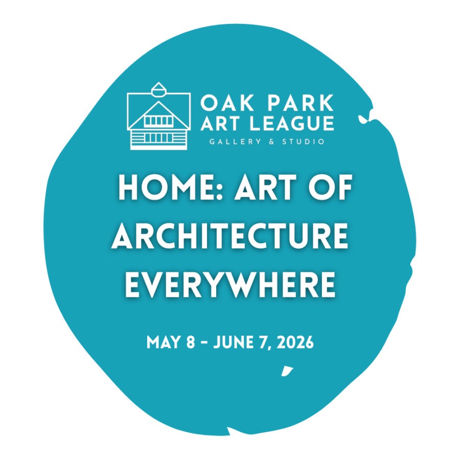

HOME: Art of Architecture Everywhere
Artists explore the architecture that surrounds us daily—from grand buildings to humble furniture, from urban landscapes to intimate interior details. This exhibition celebrates design in all its forms: built environments, indoor and outdoor spaces, furniture, and everyday objects that shape our lives.
Exhibition Judge: Elyse Agnello
EXHIBITING ARTISTS
Jay Smith, Peggy Dee, Mark Melvin, Lillian Frazer, Charles Simone, Tom Palazzolo, Marcia Palazzolo, Elaine Allen, MJ Keitel Maria Gedroc, Dave Ottens, Sandra Ferguson Anna Lentz, Peter Bialecki, Geoffrey Roupas Will Van Dyke, Carly Palmer, Merianne Tomovich, Paula Poda, Susy Chan, Kerry Petertil, Ana Vitek, Ferhat Zerin, Teresa Gierwielaniec Rozanacki, Bryan Northup
Works by OPAL Artist in Residence Elise Holowicki
HOME: Art of Architecture Everywhere runs May 8 – June 7, 2026
Stop by and see the show during gallery hours,
Thursday – Friday 1-5pm, Saturday 10am-4pm, Sunday 1-4pm